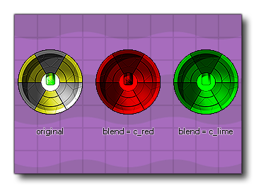

Legen Sie die Instanzfarbe fest Legen Sie die Instanzfarbe fest
Legen Sie die Instanzfarbe fest Legen Sie die Instanzfarbe fest Dieser Aktionsblock setzt die image_blend Farbe für "Mischen" mit dem Instanz-Sprite. Der Standardwert ist -1 (entspricht der Farbe Weiß). Dadurch wird das Sprite ohne Überblendung gezeichnet. Jeder andere Wert (einschließlich interner Farbkonstanten wie c_red, oder c_aqua ) mischt die angegebene Farbe mit dem ursprünglichen Sprite. Bitte beachten Sie, dass für Änderungen in dieser Aktion die Instanz entweder kein Draw-Ereignis enthalten sollte (und GameMaker Studio 2 das Sprite standardmäßig zeichnen wird) oder mit der Aktion Draw Self gezeichnet wird. Beachten Sie auch, dass Sie das Blending auf der HTML5- Plattform einschränken sollten (es sei denn, Sie verwenden WebGL), da jedes gemischte Sprite separat zwischengespeichert werden muss, sodass viele gemischte Sprites die Leistung beeinträchtigen können. 
Streit Beschreibung Colour Die neue zu verwendende Mischfarbe (ein Klick auf das Farbfeld öffnet das Farbauswahlfenster).
Der obige Aktionsblockcode legt ein neues Sprite sowie eine Reihe anderer Eigenschaften für die Anzeige dieses Sprites fest, einschließlich der Einstellung der Überblendungsfarbe auf Rosa.